FOTOS E DESCRIÇÕES
DE ALGUMAS OBRAS
1 - IGREJA DA SAGRADA FAMÍLIA - 1976/85
Jardim das Nações - TAUBATÉ - SP
A obra começou em 1976 com o Padre João Leopoldo de Almeida, Pároco da Paróquia do MENINO JESUS, no Bairro Independência. Ele idealizou construir um Templo no Jardim das Nações, que é um dos bonitos bairros da cidade. Mas os terrenos naquela área sendo muito valorizados não aparecia ninguém disposto a ceder um espaço necessário a edificação. Entretanto, sem desanimar e procurando interessadamente, o Padre João descobriu um matagal amplo, ao lado da Rua Polônia, denominado pela Municipalidade de Praça Vaticano.
Feita a limpeza da área, o resultado foi magnífico, descobriu-se uma meia encosta de terra avermelhada, de excelente qualidade, com ondulação e declive dando para a atual Avenida Estados Unidos.
Contando com a preciosa colaboração dos casais cristãos, foram organizadas festas, quermesses, rifas, almoços e apresentações de conjuntos musicais, trazendo energia e muita alegria ao ambiente, e inclusive, revelando a agradável participação dos moradores de diversos Bairros da cidade, objetivando angariar recursos para a construção.
Foi realizado um primeiro esboço do Templo por um desenhista da Mecânica Pesada, empresa antiga na cidade, situada no acesso ao Bairro do Quiririm pela Avenida Charles Schneider, ao lado da Ford do Brasil, S/A.
Mas, nesta mesma época em que o Bairro se agitava, todo mobilizado para iniciar a construção da Igreja, alguns proprietários de caminhões, atraídos pela boa qualidade da terra "descoberta" na Praça Vaticano, "sem a menor cerimônia", entraram pela parte de baixo da encosta e com pás e picaretas encheram os seus caminhões em quantidade, e vendiam a terra para as construções na cidade. Tanta terra saiu que formou um imenso barranco.
A gritaria foi geral... E o povo cristão, residente nas proximidades, instruídos pelas autoridades, decidiram fazer uma severa e permanente vigilância no local. Mas os raptores eram muito espertos e trabalhavam fora de hora, principalmente à noite e de madrugada, ocultamente, burlando a fiscalização e a lei, extraindo terra do local onde seria construída a Igreja.
Com decisão, Padre João começou a Obra em 1977, fazendo uma guarita de madeira e colocando um vigia noturno, a fim de não permitir o furto das terras da Igreja.
Iniciada a fundação da Obra, Diretores da Mecânica Pesada doaram perfis de aço para levantar a estrutura do Templo, em forma de chapéu chinês (Cabana). E como eram peças grandes e pesadas, foi utilizado o precioso auxilio dos Bombeiros e da Prefeitura, montando os perfis e ancorando-os no solo com robustas bases de concreto ciclópico. Foi soldada a estrutura e colocados telhões de cobertura. Interiormente, como medida inicial, foi nivelado um contra piso resistente e coberto com argamassa de cimento e areia. Também instalaram na frente do Templo, uma armação com robustos perfis de aço numa altura razoável, onde foi colocado o sino. E apenas para compor o perfil arquitetônico da obra, foi construído em alvenaria de tijolos defronte a Rua Polônia, o contorno externo do prédio com algumas divisões internas, sem forro, sem piso e sem as instalações elétricas e hidraulico-sanitárias. De modo que no ano de 1979, quando Padre João Leopoldo deixou a Paróquia do MENINO JESUS, este era o estado aparente da construção do Templo no Jardim das Nações.
Em fins de 1979, assumiu a Paróquia do MENINO JESUS o Padre José Benedito Leite, que gostou da idéia de edificar o Templo no Jardim das Nações. Mas, nas condições em que se encontrava a obra, não oferecia a imediata possibilidade para a celebração da Santa Missa. E por isso mesmo, o novo Pároco logo convidou o Engenheiro do APOSTOLADO DOS SAGRADOS CORAÇÕES, para ajudá-lo na construção.
A primeira providência consistiu na edificação dos muros de arrimo de concreto armado, lateralmente ao Templo, com a finalidade de implantar acessos confortáveis e seguros a Igreja, em qualquer período do ano, pois além de oferecer ao Templo a necessária proteção contra as erosões causadas pelas água pluviais, proporcionou duas amplas áreas sociais nas laterais do Templo. Com a conclusão dos muros de concreto armado, foi acionada a Prefeitura e o senhor Prefeito Waldomiro de Carvalho, que muito ajudou na obra enviou 140 caminhões de terra para repor aquela quantidade que foi retirada na frente da Igreja, e também, para fazer os aterros laterais, onde foram construídos os muros de arrimo, formando os amplos pátios de acesso e de proteção ao Templo.
Na providência seguinte, o senhor Prefeito mandou asfaltar duas ruas do Bairro laterais a Igreja, e ordenou , que também fosse asfaltado os dois pátios (as duas áreas laterais de acesso ao Templo), oferecendo o devido conforto a todos os frequentadores.
De imediato, aproveitando o aterro feito pela Prefeitura na frente da Igreja, o Engenheiro da Obra e o Padre Leite, decidiram construir a bonita escadaria de acesso pela Avenida Estados Unidos, que foi concluída na chegada do outro Pároco, Padre Libânio Cicuto em 1982.
O povo se entusiasmou e as promoções beneficentes se multiplicaram, com objetivo de conseguir recursos financeiros necessários a continuidade da obra.
No ano de 1982, Padre José Benedito Leite deixou a Paróquia do MENINO JESUS, e o senhor Bispo Diocesano Dom Antonio Afonso de Miranda SDN, decidiu entregar a Paróquia aos cuidados do Padre Libânio Cicuto, que havia fundado uma Ordem Religiosa a qual dirigia com muita santidade (Ordem dos Missionários de São José).
Assim as obras de construção da Igreja não pararam, seguiram com o necessário impulso e animada participação. Foram construídos os sanitários e terminadas as salas sem forro e pintura, foi colocado forro de alumínio dentro da Igreja, e iluminação adequada no Templo; também foi construído um bonito piso, colocados diversos ventiladores, e primordialmente, foi construído com granito uma bonita mesa de celebração no Altar, assim como, adquirido um lindo Sacrário, diversas imagens, e um majestoso CRISTO Crucificado, quase no tamanho natural, o qual se encontra fixado na parede do Altar Principal das Celebrações.
E na continuidade, com campanhas realizadas foi adquirido o aparelho de som com os alto-falantes, os bancos de madeira de lei com genuflexório resistente, especialmente fabricados para o Templo, e também, como acabamento, as paredes receberam uma discreta e agradável pintura.
Com a implantação das obras, o Padre Libânio decidiu também, transferir a sede da sua Ordem Religiosa para Taubaté, abrigando os seminaristas provisoriamente nas dependências do Templo, nas salas que estavam em construção para atender a Catequese Paroquial.
E logo em seguida, Padre Libânio conseguiu um terreno e recursos financeiros no exterior, para a construção do Seminário da sua Ordem Religiosa, cuja sede foi construída num prazo notável de 14 meses. Assim, ele pode transferir os Seminaristas que estavam abrigados provisoriamente nas salas da catequeses, para o novo prédio do Seminário da Comunidade Missionária de São José.
Agora, com as Salas da Catequese livres, foram perfeitamente concluídas e arrumadas, e puderam funcionar em plenitude as diversas Pastorais da Igreja. E também, foi a oportunidade em que Padre Libânio estimulou o povo a escolher o nome do Santo para protetor do Templo. Com o objetivo de contar com a participação do povo, realizou-se um escrutínio, a fim de que todos opinassem escolhendo com liberdade o nome preferido, numa relação de três Santos, que haviam sido previamente sugeridos por uma comissão: IGREJA DE NOSSA SENHORA APARECIDA, IGREJA DE NOSSA SENHORA DE FÁTIMA e IGREJA DA SAGRADA FAMÍLIA. A decisão da maioria elegeu: IGREJA DA SAGRADA FAMÍLIA.
Logo depois, no ano 1985, o senhor Bispo Diocesano Dom Antonio Afonso de Miranda, decidiu separar as duas Igrejas, ou seja, oficialmente instituiu duas Paróquias distintas: PARÓQUIA DO MENINO JESUS, com a IGREJA DO IMACULADO CORAÇÃO DE MARIA, no Bairro da Independência, que já existia; e a recém fundada PARÓQUIA DA SAGRADA FAMÍLIA, com a IGREJA DA SAGRADA FAMÍLIA, no Bairro do Jardim das Nações.
A seguir, fotografias da obra.
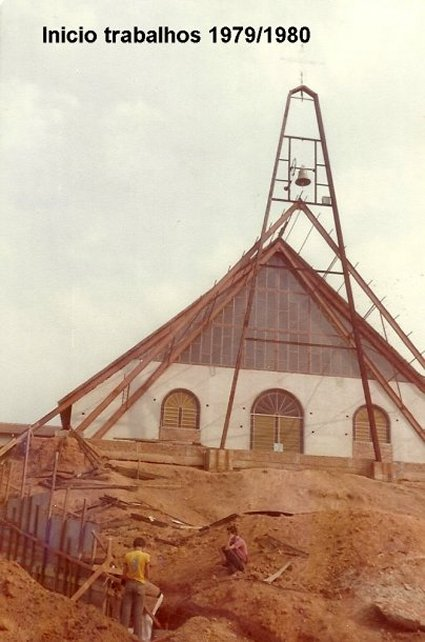
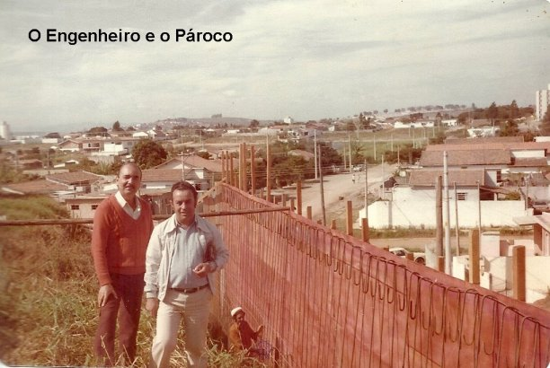
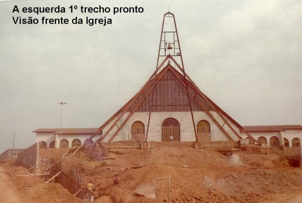
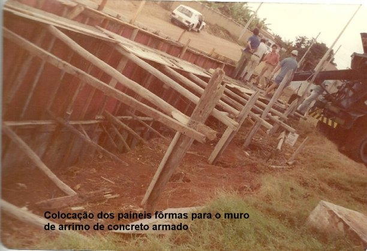
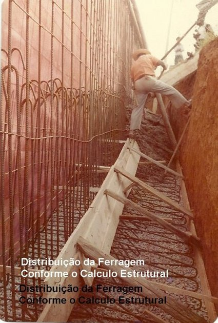
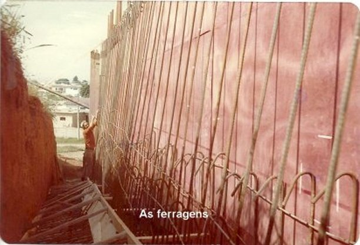
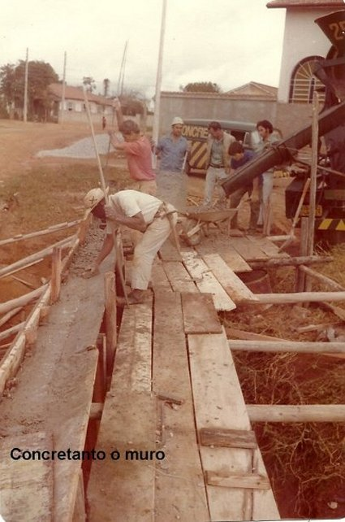
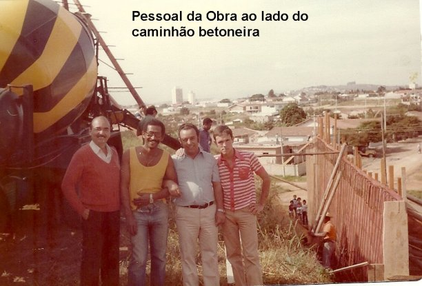
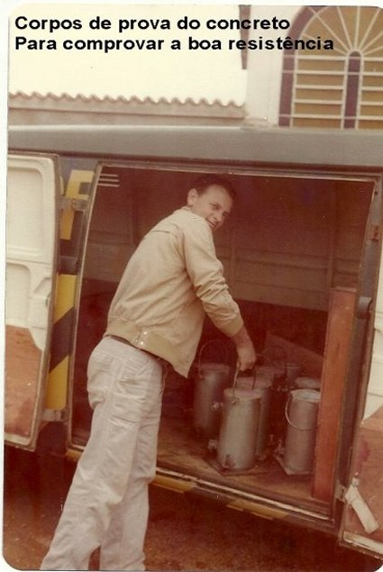
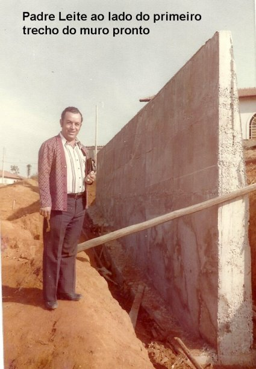
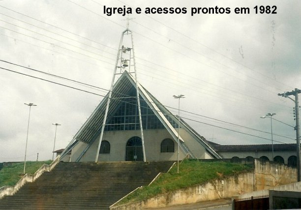
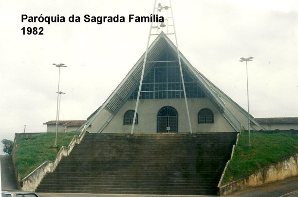
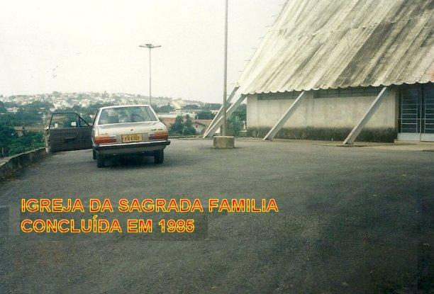

2 - COMUNIDADE MISSIONÁRIA DE SÃO JOSÉ - 1984/86
Bairro Independência, Taubaté.
Padre Libânio Cicuto quando chegou a Taubaté, estava decidido a trazer a Ordem Religiosa que havia fundado para se estabelecer na cidade, escolhendo-a como sede da sua Organização. E assim, contando com a colaboração do Engenheiro do Apostolado, conseguiu um terreno com uma área ideal; foi feito o ante-projeto das Construções e o Orçamento financeiro para executar a Obra. A seguir, ele escreveu solicitando auxílio financeiro a uma famosa Organização de Bispos Alemães, que generosamente enviou a Comunidade Missionária, o valor necessário para a construção de todas as instalações, situadas na Rua João Miguel dos Santos, 171, antiga Travessa 3, do outro lado da Avenida Marrocos, ou seja, do outro lado da estrada de ferro, no Bairro Independência, nesta cidade de Taubaté.
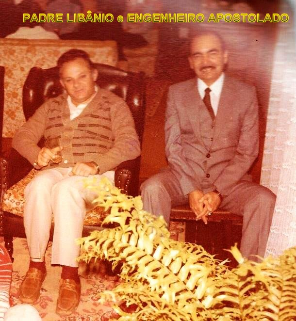
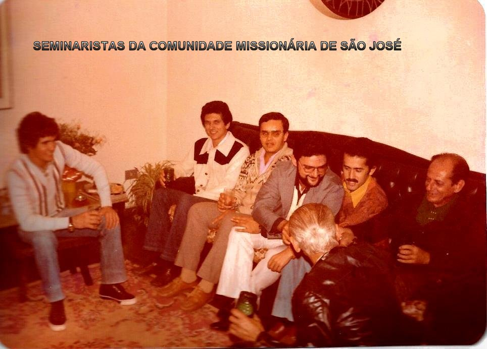

3 - RESIDÊNCIA EPISCOPAL DE TAUBATÉ - 1993/94
Travessa Clementino Ribeiro, 26 - Bairro Centro
Dom Antonio Afonso de Miranda, Bispo Diocesano de Taubaté , desejando construir a Residência Episcopal, convidou o Engenheiro do Apostolado, para apreciar o existente esboço de projeto da residência, fazer sugestões ou modificações se fosse o caso, e acompanhar a construção do prédio. O Engenheiro introduziu funcionais e necessárias alterações, de modo a colocar o Projeto em normal condições de uso. Elaborada as modificações criou-se o Projeto definitivo sendo o mesmo aprovado na Prefeitura Municipal de Taubaté, e colocado em execução através de uma firma Empreiteira escolhida e contratada pela Diocese. A obra foi acompanhada e orientada diariamente pelo profissional Engenheiro do Apostolado durante sete meses, praticamente até o final. Importante salientar: esta Obra, como todas as demais realizadas pelo Engenheiro do Apostolado para entidades religiosas cristãs, foi com assistência totalmente gratuita, ou seja, ele fez o acompanhamento e todos os cálculos técnicos necessários, em fraterna colaboração com o senhor Bispo Diocesano, sem que fosse cobrado qualquer remuneração financeira.
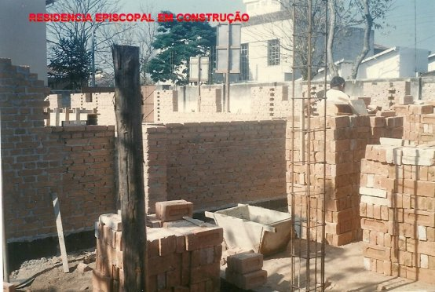
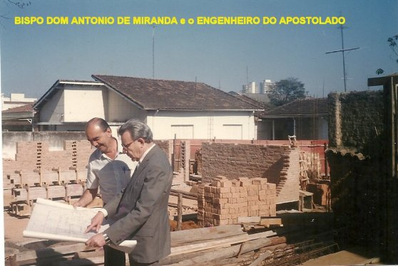
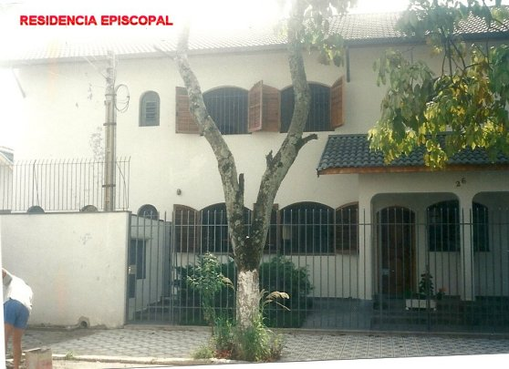
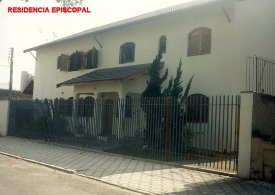